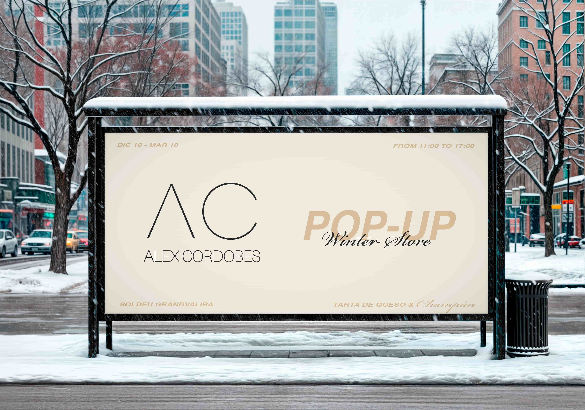
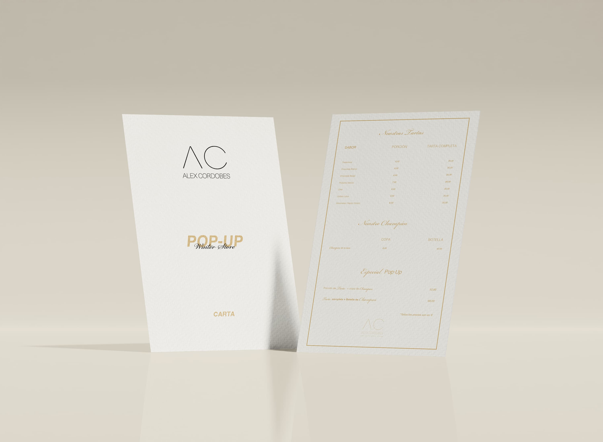
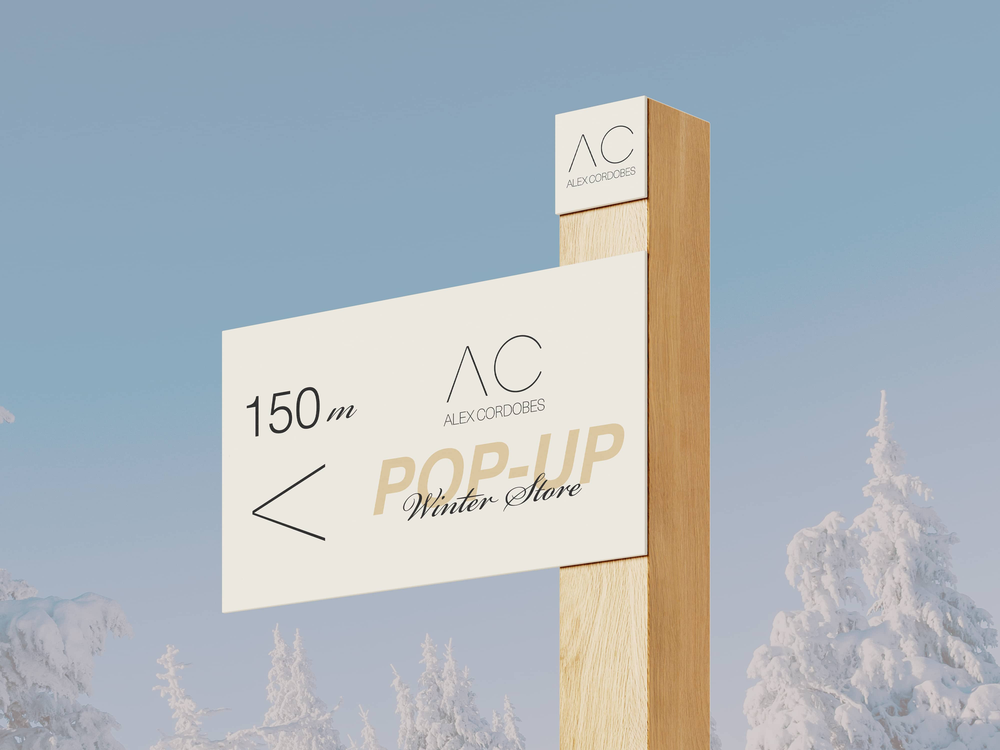

Alex Cordobés Winter Store
Pop-up de tartas en estación de esquí Soldeu Grandvalira
2024–2025
Diseño gráfico
Proyecto de asignatura
Illustrator, Photoshop
El encargo consistía en diseñar la identidad gráfica de un pop-up de tartas Alex Cordobés en la estación de esquí Soldeu Grandvalira. El concepto partía de un après-ski de lujo con tarta de queso y champán. La paleta se construyó sobre blanco, crema, dorado y negro para transmitir elegancia alpina. Las tipografías Helvetica Light, Helvetica Bold Oblique y Bickham Script Pro 3 configuran un sistema con registros distintos según el tipo de pieza. El proyecto incluyó cartel del evento en tres versiones, señalética interior y exterior, plano del recinto, carta de tartas y champán, tarjeta de colaboración con Grandvalira y mockups de banderola, roll-up y espacio exterior con autocaravana.


